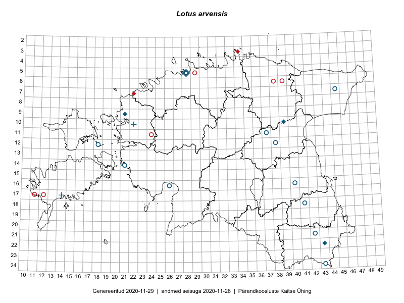

Lotus arvensis — aru-nõiahammas
Fabaceae :: Lotus arvensis Pers. (24)

Kaart põhineb 24 kirjel:
herbaareksemplare 24
Taime kaasaegsed ja ajaloolised leiukohad asuvad 16 ruudus.
Tingmärgid ja leidudega ruutude arvud periooditi uues (u) ja 2005 andmestikus (v)
| █ | vahemik | u1 | v2 |
|---|---|---|---|
| █ | 2006–2020 | 0 | – |
| ◆/◇ | 1971–2005 | 4 | 7 |
| ○ | 1921–1970 | 11 | 13 |
| + | kuni 1920 | 2 | 2 |
| × | hävinud | – | 0 |
| ? | kaheldav | – | 0 |
| Ruut | Leidja(d) | Leiuaeg | Kirje |
|---|---|---|---|
| 05-28 | H. Aasamaa | 1990-07-04 | TAM0126980: Lotus arvensis Pers. |
| 10-39 | Heljo Krall | 1987-08-25 | TAA0075859: Lotus arvensis Pers. |
| 22-43 | Nele Ingerpuu | 1986-06-12 | TAA0075865: Lotus arvensis Pers. |
| 09-21 | Heljo Krall | 1981-07-02 | TAA0075858: Lotus arvensis Pers. |
| 12-38 | Maret Kask, Kalevi Kull | 1966-06-14 | TAA0075860: Lotus arvensis Pers. |
| 07-45 | K. Haponen | 1965-06-23 | TU271813: Lotus arvensis Pers. |
| 07-45 | H. Hark | 1965-06-23 | TU271812: Lotus arvensis Pers. |
| 18-41 | Agnes Ojaveer, Visolde Puusepp | 1960-06-06 | TAA0075861: Lotus arvensis Pers. |
| 24-43 | L. Pihlapuu | 1959-08-12 | TU271817: Lotus arvensis Pers. |
| 24-43 | L. Pihlapuu | 1959-08-12 | TU271818: Lotus arvensis Pers. |
| 12-18 | Haide-Ene Rebassoo | 1957-06-27 | TAA0075867: Lotus arvensis Pers. |
| 21-42 | Maret Kask, Salme Kask | 1957-06-15 | TAA0075866: Lotus arvensis Pers. |
| 21-42 | A. Dessler | 1957-06-15 | TAA0075870: Lotus arvensis Pers. |
| 14-21 | Agnes Ojaveer | 1957-06-06 | TAA0075862: Lotus arvensis Pers. |
| 11-37 | K. Eichwald | 1955-07-03 | TU271816: Lotus arvensis Pers. |
| 16-40 | A. Remmel | 1955-06-30 | TU271814: Lotus arvensis Pers. |
| 14-21 | Liivia Laasimer | 1955-06-20 | TAA0075868: Lotus arvensis Pers. |
| 14-21 | Liivia Laasimer | 1955-06-20 | TAA0075869: Lotus arvensis Pers. |
| 05-28 | Albert Üksip | 1943-06-08 | TU271811: Lotus arvensis Pers. |
| 16-26 | Vladimir Knuut | 1932-07-11 | TAA0075864: Lotus arvensis Pers. |
| 16-26 | V. Knuut | 1932-07-11 | TAM0052622: Lotus arvensis Pers. |
| 16-26 | V. Knuut | 1932-07-11 | TU271815: Lotus arvensis Pers. |
| 17-14 | R. Lehbert | 1900-06-08 | TAM0059549: Lotus arvensis Pers. |
| 10-22 | Th. Frese | TAM0122783: Lotus arvensis Pers. |
Ruutude arv uue atlase andmekogu järgi. Muuhulgas arvestab vanemat herbaariumi, 2005. aasta atlase välitöölehtedelt uuesti digitaliseeritud andmeid jne. Uue atlase andmekogust pärinevad andmed on kaardile kantud siniste sümbolitega.↩︎
Ruutude arv 2005. aasta atlase (Kukk, T., Kull, T., Eesti taimede levikuatlas. Eesti Maaülikool, Põllumajandus- ja Keskkonnainstituut, Tartu, 2005) järgi. Andmeallikana on kasutatud levik.exe programmi, kus igas ruudus on registreeritud vaid uusim leid. Seetõttu on vanemate perioodide kohta andmed puudulikud. Kasutatud levik.exe andmestikus leidub mõningaid kõrvalekaldeid atlase trükis ilmunud versioonist, sagedamini tarnade ja käpaliste seas. Lisaks leidub selles andmestikus valik liike (peamiselt väheste leidudega tulnuktaimed), mille kaarte trükis ei avaldatud. Vana atlase andmed ruutudest, milles ei ole uue atlase andmekogus leide enne 2006. aastat, on kaardil esitatud punaste sümbolitega. Vana atlase andmetel hävinud ja kaheldavaid leiukohti pole hilisemate (taas)leidude põhjal korrigeeritud.↩︎